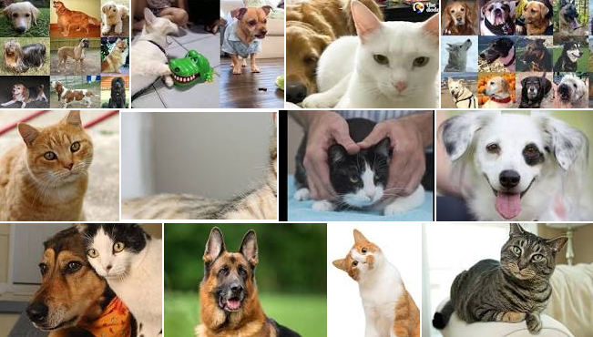

class: center, middle # Unsupervised learning Pierre Ablin .affiliations[  ] --- # Overview: - Dimension reduction methods - Clustering - Matrix factorization --- # Unsupervised learning We have some data, but no label :( -- - Labelling is often time consuming - Many data are not labelled (e.g. all images in google...) -- Goal of unsupervised learning: Analyse the structure of the dataset -- .center[  <br/> ] --- # Dimension reduction Data lives in dimension $p$: $x_1, \dots, x_p$ -- **Dimension reduction**: build a transform $z= f(x)$, where $z$ is in dimension $q < p$, such that most information caried by $x$ is kept in $z$ -- Dimension reduction questions: - What kind of transform ? - How to define "information"?